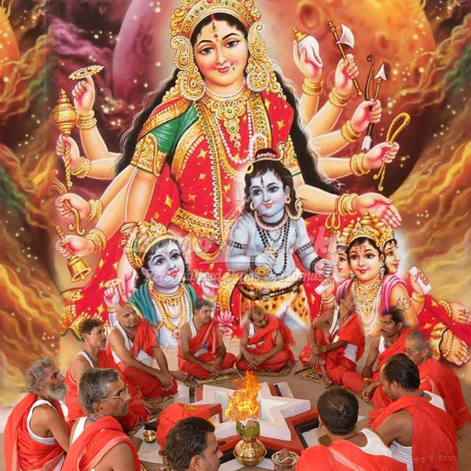

Indrakshi Stothram
इन्द्राक्षीस्तोत्रम्

ध्यानम्-
नेत्राणां दशभिश्शतैः परिवृतामत्युग्रचर्माम्बरां
हेमाभां महतीं विलम्बितशिखामामुक्तकेशान्विताम् ।
घण्टामण्डित-पादपद्मयुगलां नागेन्द्र-कुम्भस्तनीम्
इन्द्राक्षीं परिचिन्तयामि मनसा कल्पोक्तसिद्धिप्रदाम् ॥
इन्द्राक्षीं द्विभुजां देवीं पीतवस्त्रद्वयान्विताम् ।
वामहस्ते वज्रधरां दक्षिणेन वरप्रदाम् ॥
इन्द्राक्षीं सहस्रयुवतीं नानालङ्कार-भूषिताम् ।
प्रसन्नवदनाम्भोजामप्सरोगण-सेविताम् ॥
द्विभुजां सौम्यवदनां पाशाङ्कुशधरां पराम् ।
त्रैलोक्यमोहिनीं देवीमिन्द्राक्षीनामकीर्तिताम् ॥
पीताम्बरां वज्रधरैकहस्तां नानाविधालङ्करणां प्रसन्नाम् ।
त्वामप्सरस्सेवित-पादपद्मामिन्द्राक्षि वन्दे शिवधर्मपत्नीम् ॥
इन्द्रादिभिः सुरैर्वन्द्यां वन्दे शङ्करवल्लभाम् ।
एवं ध्यात्वा महादेवीं जपेत् सर्वार्थसिद्धये ॥
लं पृथिव्यात्मने गन्धं समर्पयामि ।
हं आकाशात्मने पुष्पैः पूजयामि ।
यं वाय्वात्मने धूपमाघ्रापयामि ।
रं अग्न्यात्मने दीपं दर्शयामि ।
वं अमृतात्मने अमृतं महानैवेद्यं निवेदयामि ।
सं सर्वात्मने सर्वोपचार-पूजां समर्पयामि ।
वज्रिणी पूर्वतः पातु चाग्नेय्यां परमेश्वरी ।
दण्डिनी दक्षिणे पातु नैरॄत्यां पातु खड्गिनी ॥ १॥
पश्चिमे पाशधारी च ध्वजस्था वायु-दिङ्मुखे ।
कौमोदकी तथोदीच्यां पात्वैशान्यां महेश्वरी ॥ २॥
उर्ध्वदेशे पद्मिनी मामधस्तात् पातु वैष्णवी ।
एवं दश-दिशो रक्षेत् सर्वदा भुवनेश्वरी ॥ ३॥
इन्द्र उवाच ।
इन्द्राक्षी नाम सा देवी दैवतैः समुदाहृता ।
गौरी शाकम्भरी देवी दुर्गा नाम्नीति विश्रुता ॥ ४॥
नित्यानन्दा निराहारा निष्कलायै नमोऽस्तु ते ।
कात्यायनी महादेवी चन्द्रघण्टा महातपाः ॥ ५॥
सावित्री सा च गायत्री ब्रह्माणी ब्रह्मवादिनी ।
नारायणी भद्रकाली रुद्राणी कृष्णपिङ्गला ॥ ६॥
अग्निज्वाला रौद्रमुखी कालरात्रिस्तपस्विनी ।
मेघस्श्यामा सहस्राक्षी विकटाङ्गी जडोदरी ॥ ७॥
महोदरी मुक्तकेशी घोररूपा महाबला ।
अजिता भद्रदानन्ता रोगहर्त्री शिवप्रदा ॥ ८॥
शिवदूती कराली च प्रत्यक्ष-परमेश्वरी ।
इन्द्राणी इन्द्ररूपा च इन्द्रशक्तिः परायणा ॥ ९॥
सदा सम्मोहिनी देवी सुन्दरी भुवनेश्वरी ।
एकाक्षरी परब्रह्मस्थूलसूक्ष्म-प्रवर्धिनी ॥ १०॥
रक्षाकरी रक्तदन्ता रक्तमाल्याम्बरा परा ।
महिषासुर-हन्त्री च चामुण्डा खड्गधारिणी ॥ ११॥
वाराही नारसिंही च भीमा भैरवनादिनी ।
श्रुतिः स्मृतिर्धृतिर्मेधा विद्या लक्ष्मीः सरस्वती ॥ १२॥
अनन्ता विजयापर्णा मानस्तोकापराजिता ।
भवानी पार्वती दुर्गा हैमवत्यम्बिका शिवा ॥ १३॥
शिवा भवानी रुद्राणी शङ्करार्ध-शरीरिणी ।
ऐरावतगजारूढा वज्रहस्ता वरप्रदा ॥ १४॥
नित्या सकल-कल्याणी सर्वैश्वर्य-प्रदायिनी ।
दाक्षायणी पद्महस्ता भारती सर्वमङ्गला ॥ १५॥
कल्याणी जननी दुर्गा सर्वदुर्गविनाशिनी ।
इन्द्राक्षी सर्वभूतेशी सर्वरूपा मनोन्मनी ॥ १६॥
महिषमस्तक-नृत्य-विनोदन-स्फुटरणन्मणि-नूपुर-पादुका ।
जनन-रक्षण-मोक्षविधायिनी जयतु शुम्भ-निशुम्भ-निषूदिनी ॥ १७॥
सर्वमङ्गल-माङ्गल्ये शिवे सर्वार्थ-साधिके ।
शरण्ये त्र्यम्बके देवि नारायणि नमोऽस्तुते ॥ १८॥
ॐ ह्रीं श्रीं इन्द्राक्ष्यै नमः। ॐ नमो भगवति, इन्द्राक्षि,
सर्वजन-सम्मोहिनि, कालरात्रि, नारसिंहि, सर्वशत्रुसंहारिणि ।
अनले, अभये, अजिते, अपराजिते,
महासिंहवाहिनि, महिषासुरमर्दिनि ।
हन हन, मर्दय मर्दय, मारय मारय, शोषय
शोषय, दाहय दाहय, महाग्रहान् संहर संहर ॥ १९॥
यक्षग्रह-राक्षसग्रह-स्कन्धग्रह-विनायकग्रह-बालग्रह-कुमारग्रह-
भूतग्रह-प्रेतग्रह-पिशाचग्रहादीन् मर्दय मर्दय ॥ २०॥
भूतज्वर-प्रेतज्वर-पिशाचज्वरान् संहर संहर ।
धूमभूतान् सन्द्रावय सन्द्रावय ।
शिरश्शूल-कटिशूलाङ्गशूल-पार्श्वशूल-
पाण्डु(pandu) रोगादीन् संहर संहर ॥ २१॥
य-र-ल-व-श-ष-स-ह, सर्वग्रहान् तापय
तापय, संहर संहर, छेदय छेदय
ह्रां ह्रीं ह्रूं फट् स्वाहा ॥ २२॥
गुह्याति -गुह्य-गोप्त्री त्वं गृहाणास्मत्कृतं जपम् ।
सिद्धिर्भवतु मे देवि त्वत्प्रसादान्मयि स्थिरा ॥ २३॥
फलश्रुतिः
नारायण उवाच ॥
एवं नामवरैर्देवी स्तुता शक्रेण धीमता ।
आयुरारोग्यमैश्वर्यमपमृत्यु-भयापहम् ॥ १॥
वरं प्रादान्महेन्द्राय देवराज्यं च शाश्वतम् ।
इन्द्रस्तोत्रमिदं पुण्यं महदैश्वर्य-कारणम् ॥ २ ॥
क्षयापस्मार-कुष्ठादि-तापज्वर-निवारणम् ।
चोर-व्याघ्र-भयारिष्ठ-वैष्णव-ज्वर-वारणम् ॥ ३॥
माहेश्वरमहामारी-सर्वज्वर-निवारणम् ।
शीत-पैत्तक-वातादि-सर्वरोग-निवारणम् ॥ ४॥
शतमावर्तयेद्यस्तु मुच्यते व्याधिबन्धनात् ।
आवर्तन-सहस्रात्तु लभते वाञ्छितं फलम् ॥ ५॥
राजानं च समाप्नोति इन्द्राक्षीं नात्र संशय ।
नाभिमात्रे जले स्थित्वा सहस्रपरिसंख्यया ॥ ६॥
जपेत् स्तोत्रमिदं मन्त्रं वाचासिद्धिर्भवेद्ध्रुवम् ।
सायं प्रातः पठेन्नित्यं षण्मासैः सिद्धिरुच्यते ॥ ७॥
संवत्सरमुपाश्रित्य सर्वकामार्थसिद्धये ।
अनेन विधिना भक्त्या मन्त्रसिद्धिः प्रजायते ॥ ८॥
सन्तुष्टा च भवेद्देवी प्रत्यक्षा सम्प्रजायते ।
अष्टम्यां च चतुर्दश्यामिदं स्तोत्रं पठेन्नरः ॥ ९॥
धावतस्तस्य नश्यन्ति विघ्नसंख्या न संशयः ।
कारागृहे यदा बद्धो मध्यरात्रे तदा जपेत् ॥ १०॥
दिवसत्रयमात्रेण मुच्यते नात्र संशयः ।
सकामो जपते स्तोत्रं मन्त्रपूजाविचारतः ॥ ११॥
पञ्चाधिकैर्दशादित्यैरियं सिद्धिस्तु जायते ।
रक्तपुष्पै रक्तवस्त्रै रक्तचन्दनचर्चितैः ॥ १२॥
धूपदीपैश्च नैवेद्यैः प्रसन्ना भगवती भवेत् ।
एवं सम्पूज्य इन्द्राक्षीमिन्द्रेण परमात्मना ॥ १३॥
वरं लब्धं दितेः पुत्रा भगवत्याः प्रसादतः ।
एतत् स्त्रोत्रं महापुण्यं जप्यमायुष्यवर्धनम् ॥ १४॥
ज्वरातिसार-रोगाणाm aपमृत्योर्हराय च ।
द्विजैर्नित्यमिदं जप्यं भाग्यारोग्यमभीप्सुभिः ॥ १५॥
॥ इति इन्द्राक्षी-स्तोत्रं सम्पूर्णम् ॥